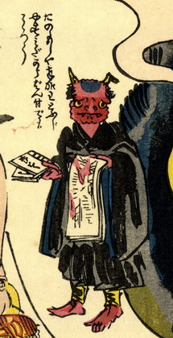

黒い法衣をまとった赤鬼が立っている。鬼の角は一方が折れている。鬼は、右手に冊子を、火事の様子が描かれた瓦版のようなものを持っている。
出典：親書誌：U426_nichibunken_0156：地しんどう化大津ゑぶし；ジシンドウケオオツエブシ／日付：2010／資源識別子：U426_nichibunken_0156_0002_0000
Copyright (c)2010- International Research Center for Japanese Studies, Kyoto, Japan. All rights reserved.